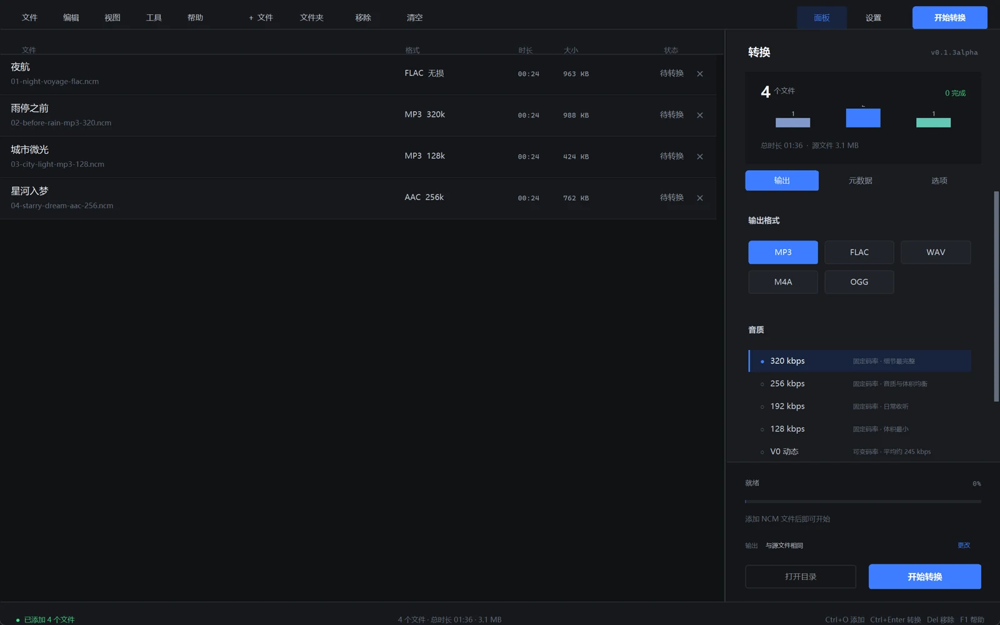

转完不是结束，
能播放才算完成。
每个输出文件都会用 FFmpeg 从头到尾完整解码一次。校验失败的文件会被明确标出， 临时文件自动删除，不会留下半首坏歌。
v0.1.1alpha / Windows 10 & 11
把网易云下载的 .ncm 变成真正能播放的
MP3 / FLAC / WAV / M4A / OGG。批量、全品质、标签完整，
全程留在你的电脑里。
WHY NCMELT
NCM 只是一个容器。ncmelt 把里面的原始音频完整取出来，按你选的格式和码率重新编码， 再做一次完整解码校验。能播放，才算完成。
每个输出文件都会用 FFmpeg 从头到尾完整解码一次。校验失败的文件会被明确标出， 临时文件自动删除，不会留下半首坏歌。
不登录、不上传、不请求网易云接口。断网也能完成转换。
兼容 NCM 里的 MP3、FLAC、AAC 与 M4A 源，覆盖标准、较高、极高和无损档位。
每个格式都有独立音质选项，不把“高质量”做成一个模糊的开关。
拖入文件夹就能排队；歌名、歌手、专辑和封面按开关写入，文件名也能按你的习惯生成。
THE WORKSPACE
左边是队列，右边是输出。拖入文件、选好格式，按下开始，剩下的进度、状态和结果都留在同一张工作台上。

OUTPUT FORMATS
不是所有场景都需要 MP3，也不是所有“无损”都该用同一种压缩。选一个格式，再选这一档真正适合它的质量。
MP3 · 有损压缩
几乎每台设备都能播放。固定码率适合统一归档，V0 动态码率则在体积和听感之间取平衡。
所有格式和音质档位都随安装包提供，不需要额外下载编码器。
COMMAND LINE
安装时把 ncmelt 加进 PATH，或者在便携版目录直接运行。
单个文件、整个目录、批量输出，都可以脚本化。
-o 扩展名自动推断格式PS> ncmelt input.ncm -o output.mp3
PS> ncmelt a.ncm b.ncm -o D:\Music --format flac --quality max
PS> ncmelt input.ncm -o output.m4a --quality 256提示 默认输出到源文件旁边，文件名取歌曲元数据。
GET NCMELT
Windows 10 / 11 64 位。安装器可选安装位置、桌面快捷方式和 PATH， 不需要管理员权限。
不会。ncmelt 只读取源文件，输出写到单独的位置。默认遇到同名文件会自动编号，也可以主动选择覆盖已有输出。
兼容 NCM 容器里的 MP3、FLAC、AAC 和 M4A 源，覆盖网易云的标准、较高、极高与无损档位。输出可选 MP3、FLAC、WAV、M4A、OGG 五种格式。
因为内置了 FFmpeg 7.1 和完整运行环境。这样安装后不需要再单独配置编码器，断网也能直接转换。便携版和安装版都包含同一套组件。
都不需要。程序不访问网易云服务，也不上传任何文件；转换完全在本机完成。你可以断网使用。
不需要。默认安装到当前用户的 %LOCALAPPDATA%\Programs\ncmelt，不会写入系统目录。卸载时会移除程序文件和 PATH 条目，但保留个人设置。
这是早期 alpha，安装包尚未购买代码签名证书，所以 SmartScreen 会提示。请确认文件来自本项目的 GitHub Releases，并对照 SHA256SUMS.txt 校验后再选择“更多信息 → 仍要运行”。